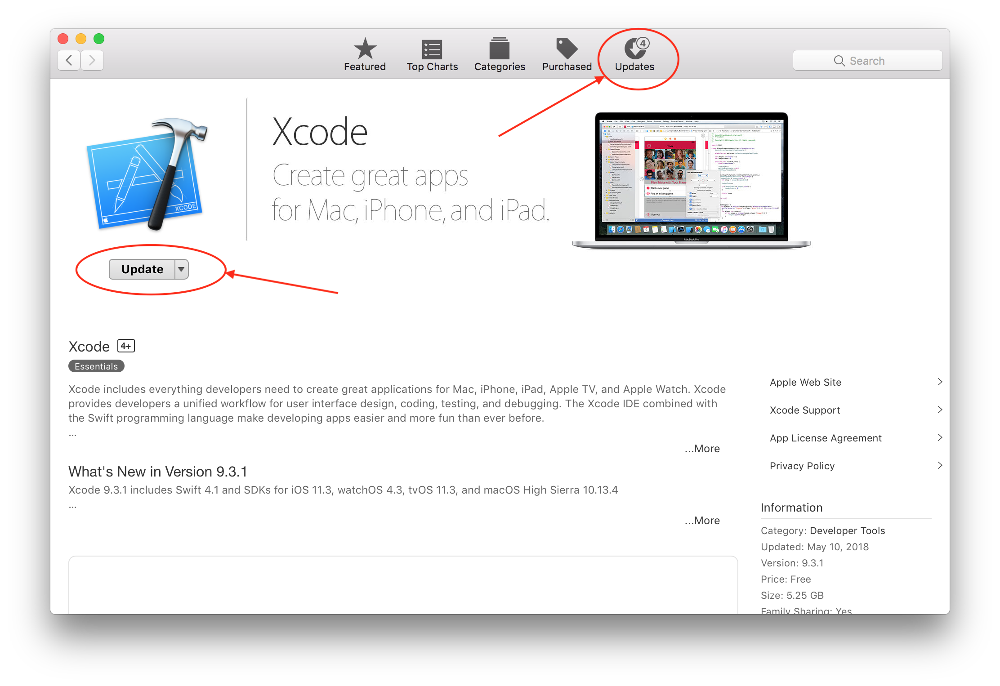

Set up Xcode⌁
You are getting closer. This next step is simply to download and install a free application called Xcode to your Apple computer.
If you are building for Omnipod Loop, Loop dev, or have iOS 12.2 installed, make sure you have followed the previous section for updating to macOS 10.14.3 at a minimum...you won't be able to download and use Xcode 10.2 without that update first.
Download Xcode⌁
Open the App Store application on your computer (it is in your Applications folder). Search for Xcode and click on the link to download/install Xcode for free. The most current version of Xcode is 10.3. Do not download the Xcode beta program, just get the regular version of the program. The file size is fairly large so expect about 45 minutes, or even multiple hours, to download depending on your internet speed.
If you already had a previous installation of Xcode, you can just check your App Store for macOS and then Xcode updates before building Loop.

Command Line Tools installation⌁
Once you have Xcode downloaded, open it from your Applications folder. There may be a short delay as Xcode installs new Command Line Tools that the app uses. Don't close that window out, let it finish. Once Xcode is open and ready, we will start with adding your new developer account to Xcode.
IMPORTANT NOTES: Do not stop the installation of Command Line Tools, that is an important installation for Xcode to work properly. When the installation is done, check that your Command Line Tools installed correctly by opening your Xcode preferences and checking the Locations tab to make sure you have Xcode 10.2.1 (or newer) selected.

Add Developer Account⌁
Go to the Xcode main menu (top left of your screen) and select Preferences from the Xcode dropdown menu. Then, click on the “Accounts” tab in the Preferences window and then press the + in the lower left corner to add an Apple ID account.

If you want to use a free developer account, you will simply enter your Apple ID in this section and Xcode will automatically enroll your Apple ID in the free developer program. If you enrolled in the paid account already, enter the Apple ID of the paid developer account. The screenshot below shows the labeling of team names based on whether from free account vs. paid account. Free teams will have (personal team) after the name.

Finally, we are going to turn on Line Numbers to make some later steps in the build process easier. Go to the "Text Editing" tab in the top of the Preferences window. Click the box to show line numbers.

You are now done setting up Xcode. Great job! You will not need to redo the account setup steps on any subsequent builds or updates of your Loop app. Xcode will remember these settings.
Next Step: Building Loop⌁
You are ready to move onto the next part Building Loop using Xcode.